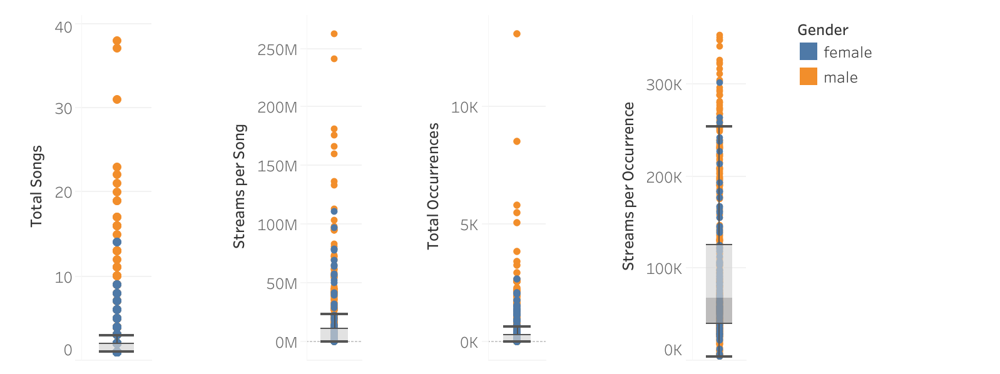

Toggle through attributes to compare the popularity of artists accross different metrics. Scroll down to learn more about the features, toggles, and metrics in the chart.
 on right side to reset range after changing attributes
on right side to reset range after changing attributes Many big hits were released in 2017. Gems from Kendrick Lamar's DAMN., Ed Sheeran's ÷, and Drake's More Life dominated the charts. In Ireland, Ed Sheeran had over 50 million streams, with "Shape of You" accumulating around 11.5 million streams in the year of its release. As a Spotify executive of the UK branch, you are interested in learning more about the streaming trends of various artists in order to better focus the growth of the platform in Ireland by monetizing on popular artists. Leveraging streaming data on the daily Top 100 songs during 2017 of English speaking countries, you will consider various metrics to determine the popularity of an artist, while focusing on Ireland for exploration in this report.
Use the graph below to identify the most popular male and female artist of 2017 in Ireland. Each bubble represents an artist who hit the daily Top 100 charts, and the size of each bubble is relative to the artist's total streams in 2017. Note that the total streams each artist accumulated in Ireland during 2017 is specified in the "Metric" attribute of the message when you hover over the respective artist's bubble.


Total Streams: the total number of streams an artist has on the daily Top 100 charts of 2017
In Ireland during 2017, Ed Sheeran had the most streams out of all artists, while Dua Lipa had the most streams out of all female artists. Looking at the chart for Total Streams, you see that Ed Sheeran was streamed about five times more than Dua Lipa. Naively considering this metric, you might conclude that Ed Sheeran was vastly more popular than Dua Lipa. As a side note, both the male and the female artist who got the most streams in 2017 are from the pop genre.

Total Songs: the total number of distinct songs an artist has on the daily Top 100 charts of 2017
Something to consider is the number of songs each artist had on the charts in 2017. 'Total Songs' measures the total number of distinct songs that each artist had on the daily Top 100 charts during 2017. As expected with a much anticipated album drop, Ed Sheeran had thirty-seven songs appear on the charts, while Dua Lipa had only six songs. Something to keep in mind is that Dua Lipa released her first album in 2017, with only a few singles since 2015. On the other hand, divide is Sheeran's third album, with his earliest work dating back to 2009.

Streams per Song: the total number of streams an average song by an artist has on the daily Top 100 charts of 2017
When you average the number of streams by total songs, it looks like Dua Lipa outperformed Ed Sheeran. 'Streams per Song' is calculated by dividing each artist's total streams by the number of distinct songs that appeared on the daily Top 100 charts during 2017. In other words, this metric looks at the number of streams an average song by a specific artist got. Specifically, Dua Lipa got more streams per song than Ed Sheeran.

Total Occurrences: the total number of times an arbitrary song by an artist appears on the daily Top 100 charts of 2017
Another factor to consider is the number of times an artist appears on the charts in 2017. 'Total Occurrences' measures the total number of times each artist landed on the daily Top 100 charts during 2017. Note that each artist can appear on a chart multiple times in one day, if the artist had multiple songs being streamed that day. Thus, this metric can also be considered as the total number of times an arbitrary song by an artist appeared on the charts during 2017. For example, Ed Sheeran landed on the charts almost three-thousand times, which averages to about ten of his songs being streamed a day. Dua Lipa only appeared on the charts about four hundred fifty times, which is about one or two songs a day.

Streams per Occurrence: the total number of streams an artist gets for every time a song of theirs makes it to the daily Top 100 charts of 2017
When you average the number of streams by total occurrences, it again looks like Dua Lipa outperformed Ed Sheeran. 'Streams per Occurrence' is calculated by dividing each artist's total streams by the number of times each artist, or an arbitrary song by the artist, appeared on the daily Top 100 charts during 2017. In other words, this metric looks at the number of streams an artist gets for every time a song of theirs makes it to the charts. Specifically, compared to Ed Sheeran, Dua Lipa got more streams each time one of her songs was played and made it to the charts.
When you consider various metrics, a definitive answer on which artist is more popular is unclear. For different concerns and goals, an executive might be interested in different metrics. As per this example, if you care more about the raw number of streams an artist gets, then you may invest more in Ed Sheeran on the platform. However, if you care more about the number of streams an artist gets for every song they have or each time one of their songs hits the charts, then you may be more inclined to invest more in Dua Lipa by highlighting her music on the platform.
Nevertheless, female artists are vastly underrepresented in the music industry. The simple exploration with Dua Lipa and Ed Sheeran shines light to a much bigger issue: female artists face barriers to entry when it comes to releasing music and actually making a name for themselves in the industy. Currently, female artists are outshined by their male counterparts because of the sheer difference in the number of male artists already present in the industry and the number of songs by male artists that are being fed into the charts. For example, Ed Sheeran has six times as many songs Dua Lipa has on the charts. Yet, the chart-hitting songs by Dua Lipa accumulate more streams on average.
With only a couple years of experience, Dua Lipa outperforms Ed Sheeran when it comes to the number of streams for each of her songs; but with a significantly smaller discography, she gets significantly fewer total raw streams. If you cared more about the total raw streams an artists gets, you could give Dua Lipa more visibility and support in producing music, so that more of her songs would make it to the charts. With a bigger discography at the rate she has for streams per song, she would be able to accumulate more raw streams than the top performing artist on the charts now. Imagine the success these artists can achieve with more support and investment from decision-makers, as well as the growth of users and streams on the platform if you promote the diversity of its song and artist pool.
Some may say that the more songs one has, the fewer streams each song will get. For example, a listerner will only play a whole album a handful of times, while the same listener may put one specific song on repeat dozens of times. Streams might be distributed more among a larger discography, so that one song from a larger tracklist will have fewer streams than a song from a smaller tracklist.
Let's see if the data matches up with this intuition.
Plotting 'Streams per Song' against 'Total Songs' for all artists in the data, you see that there is a slight positive relationship between the number of distinct songs an artist has and the streams each song gets. You also see a positive relationship for 'Streams per Occurrence' vs 'Total Occurrences'. However, the scatter of the data suggests that there are a lot of outliers which may affect the accuracy of the regression.
Looking at the distribution of each metric, any artist with more than 3 songs, 23.2 million streams per song, 638 occurrences, or 253.8 thousand streams per occurrence is an outlier.
Removing these outliers and replotting 'Streams per Song' against 'Total Songs' and 'Streams per Occurrence' against 'Total Occurrences' still shows a positive correlation. With a more robust representation of the data, the claim "the more songs one has, the fewer streams each song will get" is not necessarily true.
Below is the total number of streams that artists from each gender had in 2017; all the male artists were streamed about six more times in total than the female artists. When you look at the total number of artists who hit the charts, the total number of songs that hit the charts, and the total number of times a song appears on the charts, per gender, male artists far exceed their female counterparts. However, when you average out the total streams by those metrics, you see that the numbers are evened out a bit. This suggests that even though the popularity of artists per song and per occurrence is about the same regardless of gender, songs by males are being fed into the charts at a higher frequency, which could very likely be due to the fact that there are just so many more male artists in the industry.
In conclusion, stakeholders have the responsibility to promote female artists on the platform, not only to help reduce barriers, but also to generate revenue with the increase in total streams that these female artists contribute. I'd like to see more female artists highlighted on the platform, giving them the appreciation and visibility they deserve.
The sources for the data used are as follows: